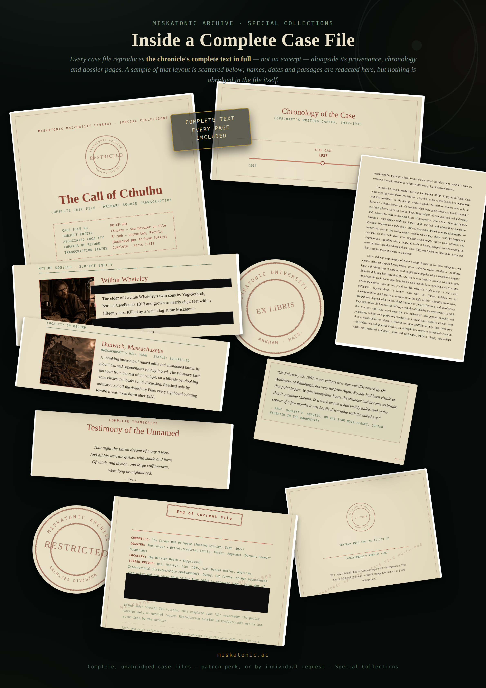

The Miskatonic Archive · Special Collections
Every case file reproduces the chronicle's complete text in full — not an excerpt — alongside its provenance, chronology, and dossier pages. Below: a genuine sample of that layout, drawn from across the Archive's shipped case files, with names, dates and passages redacted.

Click to enlarge
Complete case files are a patron perk of the Archive's recurring Ko-fi tier, and are also available individually — see each chronicle's own "Request Case File" link. Every copy includes a blank bookplate to sign by hand once printed; no name is taken at checkout.